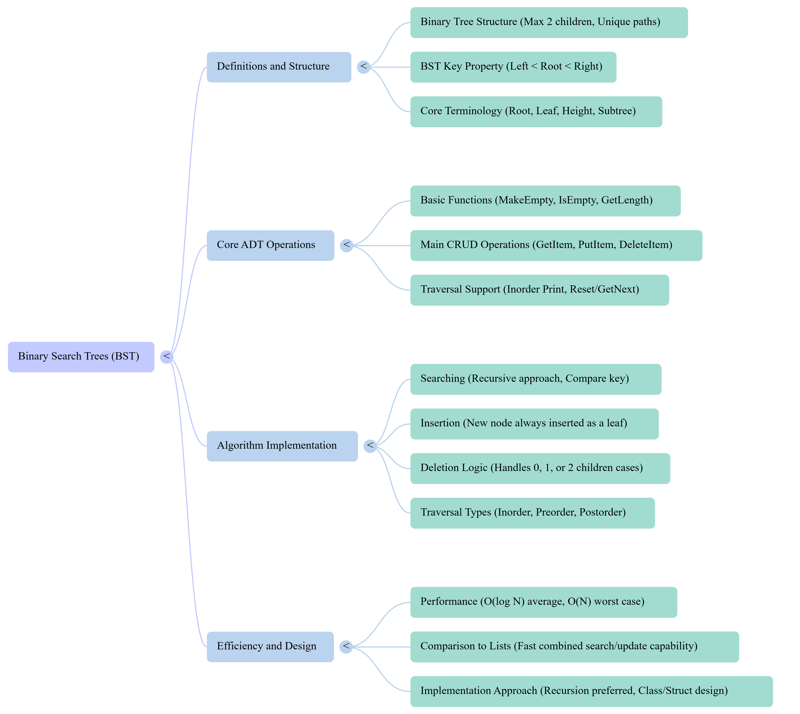

Xinxing Wu
<p class='titlep'> </p> # Trees <hr> <br> Xinxing Wu
# Outline [<p class="hover-underline-animation"> Why trees + tree basics</p>](#/ch1) [<p class="hover-underline-animation">Binary Search Tree (BST)</p>](#/ch2) [<p class="hover-underline-animation">Delete + ADT Operations + Balancing Idea</p>](#/ch3) [<p class="hover-underline-animation">Summary</p>](#/ch4) [<p class="hover-underline-animation">Application</p>](#/ch5)
## Goal <div id="shadebox-neon" class="shadebox neon"> - Understand tree words/terms (root/parent/child/leaf/level/height/subtree) - Understand what makes a <spanGREEN>BST</spanGREEN> special - Write simple C++ code: search, insert, traversals - Understand delete (high level + beginner-friendly code idea) - Understand why <spanGREEN>balanced</spanGREEN> trees are faster </div>
## Goal (cont.) <div id="shadebox-neon" class="shadebox neon"> Tree terms, BST operations, traversals, Big-$\mathcal{O}$, and balancing ideas. </div>
<p class="definition-rainbow-title">Why trees + tree basics</p>
<div class="definition-pro-Y-container"> <div class="definition-pro-Y-title">Why <spanRED>not</spanRED> just use a list?</div> <div class="definition-pro-Y-shadebox"> Imagine you store 1,000 numbers. Two basic search styles: - **Linear search:** check one by one - **Binary search (array only <spanRED>?</spanRED>):** cut in half each time (Game: guess the number) <hr style="border:0;height:6px;border-radius:999px;background:linear-gradient(90deg,#ff3b3b,#ffb13b,#fff23b,#3bff8f,#3bc8ff,#8a3bff,#ff3b3b);background-size:300% 100%;animation:rainbowLine 4s linear infinite;"><style>@keyframes rainbowLine{0%{background-position:0% 50%}100%{background-position:300% 50%}}</style> **Problem:** Binary search needs random access (easy in array, <spanRED>not</spanRED> easy in linked list) **Idea:** Use a **tree** so we can <spanGREEN>“branch”</spanGREEN> like binary search. </div> </div> > Trees as a structure that supports <spanGREEN>efficient</spanGREEN> searching. <div class="definition-pro-Y-container"> <div class="definition-pro-Y-title">Big-$\mathcal{O}$</div> <div class="definition-pro-Y-shadebox"> <div style="width: 800px;"></div> - **$\mathcal{O}$(1):** constant time (like checking the first item) - **$\mathcal{O}$(N):** grows linearly (check all items in worst case) - **$\mathcal{O}$(log N):** grows slowly (keep halving the problem) Example: - N = 1,000 - log2(1000) ≈ 10 So **~10 steps** vs **~1000 steps** (rough idea) </div> </div> <div class="definition-pro-Y-container"> <div class="definition-pro-Y-title">What is a “tree”</div> <div class="definition-pro-Y-shadebox"> <div style="width: 800px;"></div> A tree is made of **nodes** connected by **links**. Example: <div id="shadebox-glass" class="shadebox glass"> ``` A / \ B C / \ \ D E F ``` </div> </div> </div> <div class="definition-pro-Y-container"> <div class="definition-pro-Y-title">What is a “tree” - Family tree</div> <div class="definition-pro-Y-shadebox"> <div style="width: 800px;"></div> A family tree is one of the easiest examples. - Grandparents are at the top - Their children are below them - Grandchildren are below the children <div id="shadebox-glass" class="shadebox glass"> ``` Grandparent / \ Parent1 Parent2 | Child ``` </div> </div> </div> <div class="definition-pro-Y-container"> <div class="definition-pro-Y-title">What is a “tree” - Folder system on a computer</div> <div class="definition-pro-Y-shadebox"> <div style="width: 900px;"></div> Your computer folders are like a tree. - Main folder - Subfolders inside it - More folders or files inside those <div id="shadebox-glass" class="shadebox glass"> ``` Documents / \ Work School | Homework ``` </div> </div> </div> <div class="definition-pro-Y-container"> <div class="definition-pro-Y-title">What is a “tree” - Menu in a restaurant app or website</div> <div class="definition-pro-Y-shadebox"> <div style="width: 950px;"></div> A menu can be organized like a tree: - Food - Burgers - Pizza - Drinks - Soda - Juice </div> </div> </div> <div class="definition-pro-Y-container"> <div class="definition-pro-Y-title">What is a “tree” - Classroom or school structure </div> <div class="definition-pro-Y-shadebox"> <div style="width: 900px;"></div> A school can be arranged like this: - School - Departments - Teachers - Students or classes </div> </div> <div class="definition-pro-Y-container"> <div class="definition-pro-Y-title">What is a “tree” (cont.)</div> <div class="definition-pro-Y-shadebox"> <div style="width: 800px;"></div> Words: - A is the **root** - B and C are **children** of A - A is **parent** of B and C <div id="shadebox-glass" class="shadebox glass"> ``` A / \ B C / \ \ D E F ``` </div> </div> </div> <div class="definition-pro-Y-container"> <div class="definition-pro-Y-title">Tree vocabulary</div> <div class="definition-pro-Y-shadebox"> <div style="width: 800px;"></div> - **Node:** a data item (like a box) - **Root:** top node (no parent) - **Parent / Child:** directly connected above/below - **Leaf:** node with no children - **Ancestor / Descendant:** “above / below” in the family chain - **Subtree:** a node plus everything under it </div> </div> <div class="definition-pro-Y-container"> <div class="definition-pro-Y-title">Subtree example</div> <div class="definition-pro-Y-shadebox"> <div style="width: 800px;"></div> Tree <div id="shadebox-glass" class="shadebox glass"> ``` A / \ B C / \ D E ``` </div> </div> </div> <div class="definition-pro-Y-container"> <div class="definition-pro-Y-title">Subtree example</div> <div class="definition-pro-Y-shadebox"> <div style="width: 800px;"></div> Subtree at **B** is: <div id="shadebox-glass" class="shadebox glass"> ``` B / \ D E ``` </div> </div> </div> > So: every node can be “root of its own subtree”. ``` A / \ B C / \ D E ``` <hr> ``` B / \ D E ``` <div class="definition-pro-Y-container"> <div class="definition-pro-Y-title">Unique path from root</div> <div class="definition-pro-Y-shadebox"> <div style="width: 800px;"></div> A valid tree must have: - <spanGREEN>One</spanGREEN> root - Every node (except root) has exactly **<spanGREEN>One</spanGREEN> parent** - There is a **<spanBYMix>unique</spanBYMix> path** from root to any node <spanRED>If a node has **two** parents, it’s **not** a tree.</spanRED> <hr> Will show “not a tree” examples and explains why. </div> </div> <div class="definition-pro-Y-container"> <div class="definition-pro-Y-title">Binary tree</div> <div class="definition-pro-Y-shadebox"> <div style="width: 800px;"></div> A **<spanGREEN>binary</spanGREEN> tree**: - Has a unique root - Every node has **0, 1, or 2 children** - Children are often called: - **left child** - **right child** </div> </div> <div class="definition-pro-Y-container"> <div class="definition-pro-Y-title">Leaf node</div> <div class="definition-pro-Y-shadebox"> <div style="width: 800px;"></div> A **leaf** is a node with **<spanGREEN>no</spanGREEN> children**. Example: <div id="shadebox-glass" class="shadebox glass"> ``` A / \ B C / D ``` </div> </div> </div> - Leaves: **B** and **D** <div class="definition-pro-Y-container"> <div class="definition-pro-Y-title">Level (distance from root)</div> <div class="definition-pro-Y-shadebox"> <div style="width: 800px;"></div> - Root is level **0** - Children of root are level **1** - Next layer is level **2**, etc. Example: <div id="shadebox-glass" class="shadebox glass"> <div style="font-size: 1.6em; line-height: 1.5;"> ``` A (level 0) / \ B C (level 1) / D (level 2) ``` </div> </div> </div> </div> <div class="definition-pro-Y-container"> <div class="definition-pro-Y-title">Height (maximum level)</div> <div class="definition-pro-Y-shadebox"> <div style="width: 800px;"></div> **Height of a tree** = the **largest <spanGREEN>level</spanGREEN> number** in the tree. Example above: - max level is 2 → height = 2 Simple idea: - Taller tree → <spanGREEN>longer</spanGREEN> paths → <spanGREEN>slower</spanGREEN> search (usually) </div> </div> <div class="definition-pro-Y-container"> <div class="definition-pro-Y-title">Quick practice</div> <div class="definition-pro-Y-shadebox"> <div style="width: 800px;"></div> <div id="shadebox-glass" class="shadebox glass"> ``` 10 / \ 5 15 / \ 12 20 ``` </div> Questions: 1) Root? 2) Leaves? 3) Level of 12? 4) Height? <button type="button" class="reveal-btn" data-answer="answer-q0">Show Answer</button> <div id="answer-q0" class="answer-box"> <b>Answer:</b>1) Root = 10; 2) Leaves = 5, 12, 20; 3) Level(12) = 2; 4) Height = 2 </div> </div> </div> <div class="definition-pro-Y-container"> <div class="definition-pro-Y-title">Why do we need pointers?</div> <div class="definition-pro-Y-shadebox"> <div style="width: 800px;"></div> Trees grow and shrink (insert/delete). So we often create nodes dynamically: - `new` makes a node in memory - pointers <spanGREEN>connect</spanGREEN> nodes together <hr> Key pointer idea: - A pointer stores an **address** of a node. </div> </div> <div class="definition-pro-Y-container"> <div class="definition-pro-Y-title">Minimal Node struct</div> <div class="definition-pro-Y-shadebox"> <div style="font-size: 1.6em; line-height: 1.5;"> ```cpp struct Node { int key; Node* left; Node* right; Node(int k) : key(k), left(nullptr), right(nullptr) {} }; ``` </div> </div> </div> <div class="definition-pro-Y-container"> <div class="definition-pro-Y-title">Note</div> <div class="definition-pro-Y-shadebox"> <div style="width: 800px;"></div> - Node(int k) means: when creating a Node, you must give it one integer k. - : key(k), left(nullptr), right(nullptr) - This is called the initializer list. It initializes the member variables directly: - key(k) → set key to k; - left(nullptr) → set left to nullptr; - right(nullptr) → set right to nullptr - {} The constructor body is empty because all the work was already done in the initializer list. </div> </div> <div class="definition-pro-Y-container"> <div class="definition-pro-Y-title">Note</div> <div class="definition-pro-Y-shadebox"> <div style="width: 800px;"></div> What does the code mean? <div style="font-size: 1.6em; line-height: 1.5;"> ``` Node n(10); ``` </div> - n.key becomes 10 - n.left becomes nullptr - n.right becomes nullptr <div style="font-size: 1.6em; line-height: 1.5;"> ``` Node(int k) { key = k; left = nullptr; right = nullptr; } ``` </div> </div> </div> <div class="definition-pro-Y-container"> <div class="definition-pro-Y-title">Notes</div> <div class="definition-pro-Y-shadebox"> <div style="width: 800px;"></div> - nullptr means “no child” - left and right are pointers to other nodes </div> </div> <div class="definition-pro-Y-container"> <div class="definition-pro-Y-title">Example: make a node</div> <div class="definition-pro-Y-shadebox"> <div style="width: 800px;"></div> <div style="font-size: 1.6em; line-height: 1.5;"> ``` Node* root = new Node(10); root->left = new Node(5); root->right = new Node(15); ``` </div> <div id="shadebox-glass" class="shadebox glass"> ``` 10 / \ 5 15 ``` </div> </div> </div> - We’ll discuss deleting/freeing memory later (or use smart pointers in advanced C++). <div class="definition-pro-Y-container"> <div class="definition-pro-Y-title">Minimal Node struct</div> <div class="definition-pro-Y-shadebox"> <div style="font-size: 1.6em; line-height: 1.5;"> ```cpp struct Node { int key; // stores the value of this node Node* left; // pointer to the left child node Node* right; // pointer to the right child node Node(int k) : key(k), left(nullptr), right(nullptr) {} // constructor: // when a Node is created, key gets k // left starts as nullptr // right starts as nullptr }; ``` </div> </div> </div> <div class="definition-pro-Y-container"> <div class="definition-pro-Y-title">Note</div> <div class="definition-pro-Y-shadebox"> Why use : key(k), left(nullptr), right(nullptr)? - That part is called an initializer list. - It initializes the members directly before the constructor body runs. <hr> But initializer lists are often preferred because: - they are more efficient in general - they are required for some kinds of members - they are standard C++ style for constructors </div> </div> <div class="definition-pro-Y-container"> <div class="definition-pro-Y-title">Minimal Node struct</div> <div class="definition-pro-Y-shadebox"> - You can put them in the body. Both are valid. <div style="font-size: 1.6em; line-height: 1.5;"> ```cpp struct Node { int key; // value stored in the node Node* left; // address of left child Node* right; // address of right child // constructor to make a new node Node(int k) { key = k; left = nullptr; right = nullptr; } }; ``` </div> </div> </div>
<p class="definition-rainbow-title">Binary Search Tree (BST)</p>
<div class="definition-pro-Y-container"> <div class="definition-pro-Y-title">Binary Search Tree (BST)</div> <div class="definition-pro-Y-shadebox"> <div style="width: 800px;"></div> BST rule + search + insert + traversals </div> </div> <div class="definition-pro-Y-container"> <div class="definition-pro-Y-title">What is special about a BST?</div> <div class="definition-pro-Y-shadebox"> <div style="width: 800px;"></div> A Binary Search Tree has this rule: For every node: - all keys in left subtree are <spanRED>smaller</spanRED> - all keys in right subtree are <spanRED>larger</spanRED> That rule <spanGREEN>akes searching fast</spanGREEN>. </div> </div> - Emphasizing this “special property” that supports $\mathcal{O}$(log N) search when balanced. <div class="definitio-container"> <div class="definition-title">Note</div> <div class="definition-shadebox"> <div style="width: 800px;"></div> Balanced means the tree is shaped so it does not lean too much to one side. In a balanced BST: - the left and right subtrees of a node have roughly similar height - the tree stays more like a bushy tree - it does not become a long chain <hr> Why that matters Searching in a BST works by going: - left if smaller - right if larger So the time depends on the height of the tree. </div> </div> <div class="definition-pro-Y-container"> <div class="definition-pro-Y-title">BST example</div> <div class="definition-pro-Y-shadebox"> <div style="width: 800px;"></div> ``` 10 / \ 5 15 / \ \ 2 7 20 ``` <div id="shadebox-glass" class="shadebox glass"> - left of 10: {5,2,7} all < 10 ✅ - right of 10: {15,20} all > 10 ✅ </div> </div> </div> <div class="definition-pro-Y-container"> <div class="definition-pro-Y-title">Non-BST example</div> <div class="definition-pro-Y-shadebox"> <div style="width: 800px;"></div> ``` 10 / \ 5 15 / 8 ``` <div id="shadebox-glass" class="shadebox glass"> Is this a BST? - 8 is in the right subtree of 10 - But 8 < 10 ❌ So it violates the <spanRED>BST rule</spanRED>. </div> </div> </div> <div class="definition-pro-Y-container"> <div class="definition-pro-Y-title">Searching in a BST</div> <div class="definition-pro-Y-shadebox"> <div style="width: 800px;"></div> To search for value x: - Start at root - If x == node key → found - If x < node key → go left - If x > node key → go right - Repeat until null This feels like “<spanGREEN>binary search</spanGREEN>” but on a tree. </div> </div> <div id="shadebox"> ### C++: Search <hr style="border: none; border-top: 1.5px solid cyan;"> ``` bool contains(Node* root, int x) { Node* cur = root; while (cur != nullptr) { if (x == cur->key) return true; if (x < cur->key) cur = cur->left; else cur = cur->right; } return false; } ``` </div> - We move a pointer cur down the tree; Stop when we hit nullptr <div class="definition-pro-Y-container"> <div class="definition-pro-Y-title">BST</div> <div class="definition-pro-Y-shadebox"> <div style="width: 800px;"></div> ``` 10 / \ 5 15 / \ 12 20 ``` <div id="shadebox-glass" class="shadebox glass"> Trace contains(root, 12): - Start 10 → go right - At 15 → go left - At 12 → found </div> </div> </div> <div class="definition-pro-Y-container"> <div class="definition-pro-Y-title">Inserting into a BST</div> <div class="definition-pro-Y-shadebox"> <div style="width: 800px;"></div> To insert x: - Follow the same path as searching - When you <spanGREEN>reach</spanGREEN> a nullptr child position, put the new node there. Important: - You <spanRED>must</spanRED> keep the BST <spanGREEN>rule</spanGREEN> true after insert. </div> </div> - Listing “PutItem” (insert) as a core operation. <div id="shadebox"> ### C++: Insert (recursive) <hr style="border: none; border-top: 1.5px solid cyan;"> ``` Node* insert(Node* root, int x) { if (root == nullptr) { return new Node(x); } if (x < root->key) { root->left = insert(root->left, x); } else if (x > root->key) { root->right = insert(root->right, x); } // If x == root->key, do nothing (no duplicates) for simplicity return root; } ``` </div> - Base case: empty spot → create node; Recursive case: go left or right <div class="definition-pro-Y-container"> <div class="definition-pro-Y-title">Why recursion is natural for trees</div> <div class="definition-pro-Y-shadebox"> <div style="width: 800px;"></div> A tree is made of subtrees. So many functions follow the pattern: - solve for left subtree - solve for right subtree - combine results This matches <spanGREEN>recursion</spanGREEN> perfectly. </div> </div> <div class="definition-pro-Y-container"> <div class="definition-pro-Y-title">Traversal</div> <div class="definition-pro-Y-shadebox"> <div style="width: 800px;"></div> Traversal = visiting nodes in an order Common traversal orders: - Preorder: Node, Left, Right - Inorder: Left, Node, Right - Postorder: Left, Right, Node </div> </div> <div class="definition-pro-Y-container"> <div class="definition-pro-Y-title">Inorder traversal (BST superpower)</div> <div class="definition-pro-Y-shadebox"> <div style="width: 800px;"></div> In a BST, inorder traversal prints keys in sorted order. Example BST keys output: - inorder: 2, 5, 7, 10, 12, 15, 20 This matches “Print in ascending order” idea. </div> </div> <div id="shadebox"> <div style="width: 800px;"></div> ### C++: Inorder traversal <hr style="border: none; border-top: 1.5px solid cyan;"> ``` void inorder(Node* root) { if (root == nullptr) return; inorder(root->left); std::cout << root->key << " "; inorder(root->right); } ``` </div> - “Go left as far as possible” - Then print node - Then go right <div class="definition-pro-Y-container"> <div class="definition-pro-Y-title">C++: Preorder traversal</div> <div class="definition-pro-Y-shadebox"> <div style="width: 800px;"></div> ``` void preorder(Node* root) { if (root == nullptr) return; std::cout << root->key << " "; preorder(root->left); preorder(root->right); } ``` - “Copy this tree” - “Save tree structure” (often) </div> </div> <div class="definition-pro-Y-container"> <div class="definition-pro-Y-title">C++: Postorder traversal</div> <div class="definition-pro-Y-shadebox"> <div style="width: 800px;"></div> ``` void postorder(Node* root) { if (root == nullptr) return; postorder(root->left); postorder(root->right); std::cout << root->key << " "; } ``` - “Delete/free nodes safely” - “Compute something bottom-up” </div> </div> <div class="definition-pro-Y-container"> <div class="definition-pro-Y-title">Practice</div> <div class="definition-pro-Y-shadebox"> <div style="width: 800px;"></div> BST built by inserting in this order: 10, 5, 15, 2, 7, 12 Tree: <div id="shadebox-glass" class="shadebox glass"> ``` 10 / \ 5 15 / \ / 2 7 12 ``` </div> Questions: - inorder? preorder? postorder? <button type="button" class="reveal-btn" data-answer="answer-q1">Show Answer</button> <div id="answer-q1" class="answer-box"> <b>Answer:</b>1.inorder: 2 5 7 10 12 15; 2.preorder: 10 5 2 7 15 12; 3.postorder: 2 7 5 12 15 10 </div> </div> </div> <div class="definition-pro-Y-container"> <div class="definition-pro-Y-title">Complexity</div> <div class="definition-pro-Y-shadebox"> <div style="width: 800px;"></div> Let h = height of tree. Operations (search/insert) are usually: - O(h) comparisons If tree is balanced: - h is about log2(N) - so search/insert ~ O(log N) </div> </div> <div class="definition-pro-Y-container"> <div class="definition-pro-Y-title">Complexity (cont.)</div> <div class="definition-pro-Y-shadebox"> If tree is “a chain”: - h ≈ N - so search/insert ~ O(N) (bad) </div> </div> - Comparing worst-case vs balanced behavior and highlights the role of height.
<p class="definition-rainbow-title">Delete + ADT Operations + Balancing Idea</p>
<div class="definition-pro-Y-container"> <div class="definition-pro-Y-title">BST ADT - logical view</div> <div class="definition-pro-Y-shadebox"> <div style="width: 800px;"></div> Common BST “ADT style” operations (names vary): - MakeEmpty - IsEmpty - IsFull (in linked structure: “can we allocate?”) - GetLength (# nodes) - GetItem (search) </div> </div> <div class="definition-pro-Y-container"> <div class="definition-pro-Y-title">BST ADT - logical view (cont.)</div> <div class="definition-pro-Y-shadebox"> Common BST “ADT style” operations (names vary): - PutItem (insert) - DeleteItem (delete) - Print (often inorder) - ResetTree / GetNextItem (iterate traversal order) </div> </div> - Providing a BST specification table with these ideas. <div class="definition-pro-Y-container"> <div class="definition-pro-Y-title">IsEmpty</div> <div class="definition-pro-Y-shadebox"> If the root pointer is null, tree is empty: <div id="shadebox-glass" class="shadebox glass"> ``` bool isEmpty(Node* root) { return root == nullptr; } ``` </div> </div> </div> <div class="definition-pro-Y-container"> <div class="definition-pro-Y-title">GetLength (count nodes)</div> <div class="definition-pro-Y-shadebox"> <div id="shadebox-glass" class="shadebox glass"> ``` int getLength(Node* root) { if (root == nullptr) return 0; return 1 + getLength(root->left) + getLength(root->right); } ``` </div> </div> </div> <div class="definition-pro-Y-container"> <div class="definition-pro-Y-title">CopyTree (deep copy)</div> <div class="definition-pro-Y-shadebox"> <div id="shadebox-glass" class="shadebox glass"> ``` Node* copyTree(Node* root) { if (root == nullptr) return nullptr; Node* n = new Node(root->key); n->left = copyTree(root->left); n->right = copyTree(root->right); return n; } ``` </div> </div> </div> - We create a new node for every old node - Then recursively copy children <div class="definition-pro-Y-container"> <div class="definition-pro-Y-title">Delete</div> <div class="definition-pro-Y-shadebox"> To delete a key from BST: Case A) Node is a leaf - Just remove it Case B) Node has 1 child - Replace node with its child </div> </div> <div class="definition-pro-Y-container"> <div class="definition-pro-Y-title">Delete (cont.)</div> <div class="definition-pro-Y-shadebox"> Case C) Node has 2 children - Replace node key with: - inorder successor (smallest in right subtree), OR - inorder predecessor (largest in left subtree) - Then delete that successor/predecessor node </div> </div> <div class="definition-pro-Y-container"> <div class="definition-pro-Y-title">Visual: inorder successor</div> <div class="definition-pro-Y-shadebox"> If deleting node 10 here: <div id="shadebox-glass" class="shadebox glass"> ``` 10 / \ 5 15 / \ 12 20 ``` </div> </div> </div> - inorder successor of 10 is 12 (smallest key in right subtree) - Replace 10 with 12, then delete the old 12 node. <div class="definition-pro-Y-container"> <div class="definition-pro-Y-title">findMin in a subtree</div> <div class="definition-pro-Y-shadebox"> <div id="shadebox-glass" class="shadebox glass"> ``` Node* findMin(Node* root) { Node* cur = root; while (cur != nullptr && cur->left != nullptr) { cur = cur->left; } return cur; } ``` </div> </div> </div> <div class="definition-pro-Y-container"> <div class="definition-pro-Y-title">Delete</div> <div class="definition-pro-Y-shadebox"> <div id="shadebox-glass" class="shadebox glass"> ``` Node* remove(Node* root, int x) { if (root == nullptr) return nullptr; if (x < root->key) { root->left = remove(root->left, x); } else if (x > root->key) { root->right = remove(root->right, x); } else { // Found node to delete if (root->left == nullptr && root->right == nullptr) { delete root; return nullptr; } if (root->left == nullptr) { Node* temp = root->right; delete root; return temp; } if (root->right == nullptr) { Node* temp = root->left; delete root; return temp; } // Two children: replace with inorder successor Node* succ = findMin(root->right); root->key = succ->key; root->right = remove(root->right, succ->key); } return root; } ``` </div> </div> </div> <div class="definition-pro-Y-container"> <div class="definition-pro-Y-title">Note on Delete</div> <div class="definition-pro-Y-shadebox"> - This is standard BST delete logic - We return the new subtree root each time </div> </div> <div class="definition-pro-Y-container"> <div class="definition-pro-Y-title">Practice</div> <div class="definition-pro-Y-shadebox"> Start BST insert order: 10, 5, 15, 2, 7, 12, 20 Delete: - delete 2 (leaf) - delete 15 (two children) Questions: What is the inorder traversal after each delete? <button type="button" class="reveal-btn" data-answer="answer-q2">Show Answer</button> <div id="answer-q2" class="answer-box"> <b>Answer:</b>Original inorder: 2 5 7 10 12 15 20； After delete 2: 5 7 10 12 15 20； After delete 15: replace 15 with successor 20 OR 12 depending on method Using successor from right subtree (20): 5 7 10 12 20 </div> </div> </div> <div class="question-container"> <div class="question-title">Why trees can become slow</div> <div class="question-shadebox"> Bad case: insert sorted data: 1, 2, 3, 4, 5 Tree becomes: <hr style="border: none; border-top: 2px dashed green;"> ``` 1 \ 2 \ 3 \ 4 \ 5 ``` - Height ≈ N → operations become O(N). </div> </div> <div class="question-container"> <div class="question-title">Balanced tree idea</div> <div class="question-shadebox"> A “balanced-ish” BST keeps height small (near log2(N)). For N=16: - A well-shaped BST can have height around 4 - A chain can have height 15 So “balance” is about keeping levels filled. </div> </div> <div class="question-container"> <div class="question-title">Simple balancing strategy</div> <div class="question-shadebox"> One beginner-friendly idea: - Get inorder traversal → sorted list - Build a new tree by choosing the middle element as root - Recursively build left/right from halves This produces a balanced tree (from sorted data). (Advanced: AVL trees, Red-Black trees do balancing automatically.) </div> </div>
<p class="definition-rainbow-title">Summary</p>
<iframe src="./Discussion8.html" style="width:100%;max-width:1200px;height:620px;border:0;border-radius:14px;overflow:hidden;display:block;margin:30px auto;" allow="autoplay" sandbox="allow-scripts allow-same-origin"> </iframe> <iframe style="width:100%;max-width:1200px;height:700px;border:0;border-radius:16px;overflow:hidden;display:block;margin:0 auto;box-shadow:0 18px 50px rgba(0,0,0,.35);background:rgba(0,0,0,.06);" src="./files/11_Trees.pdf#page=1&zoom=page-width" allow="fullscreen" loading="lazy"> </iframe> <iframe style="width:100%;max-width:1200px;height:700px;border:0;border-radius:12px;overflow:hidden;display:block;margin:0 auto;" srcdoc='<!doctype html> <html> <head> <meta charset="utf-8" /> <meta name="viewport" content="width=device-width,initial-scale=1" /> <style> body{margin:0;padding:14px;font-family:Arial,Helvetica,sans-serif;background:#32a881;} .wrap{width:100%;max-width:1200px;margin:0 auto;} .bar{display:flex;gap:10px;align-items:center;margin-bottom:10px;} button{padding:8px 12px;border:1px solid #ccc;border-radius:8px;background:#fff;cursor:pointer;} .label{margin-left:auto;font-size:14px;color:#333;} .box{width:100%;height:650px;border:1px solid rgba(0,0,0,.18);border-radius:12px;overflow:auto;background:#fafafa;box-shadow:0 10px 25px rgba(0,0,0,.10);} img{display:block;width:auto;height:700px;max-width:none;max-height:none;transform-origin:top left;transform:scale(1);} </style> </head> <body> <div class="wrap" id="root"> <div class="bar"> <button id="zin" type="button">Zoom +</button> <button id="zout" type="button">Zoom -</button> <button id="zreset" type="button">Reset (100%)</button> <span class="label" id="zl">100%</span> </div> <div class="box" id="box"> <p></p> </div> </div> <script> (function(){ var zoom=1, step=0.2, min=0.2, max=6; var img=document.getElementById("img"); var label=document.getElementById("zl"); var box=document.getElementById("box"); function apply(){ img.style.transform="scale("+zoom+")"; label.textContent=Math.round(zoom*100)+"%"; } document.getElementById("zin").addEventListener("click", function(){ zoom=Math.min(max, zoom+step); apply(); }); document.getElementById("zout").addEventListener("click", function(){ zoom=Math.max(min, zoom-step); apply(); }); document.getElementById("zreset").addEventListener("click", function(){ zoom=1; apply(); }); box.addEventListener("wheel", function(e){ if(!e.ctrlKey) return; e.preventDefault(); zoom += (e.deltaY < 0) ? step : -step; zoom = Math.max(min, Math.min(max, zoom)); apply(); }, {passive:false}); apply(); })(); </script> </body> </html>'> </iframe> ## Review <video controls> <source src="./files/Binary_Search_Trees.mp4" type="video/mp4"> </video>
<p class="definition-rainbow-title">Application</p>
<div class="definition-pro-Y-container"> <div class="definition-pro-Y-title">Lab</div> <div class="definition-pro-Y-shadebox"> Lab: Build an IntBST program (menu-driven) <div id="shadebox-glass" class="shadebox glass"> Menu: - Insert a number - Search for a number - Delete a number - Print inorder (sorted) - Print preorder </div> </div> </div> <div class="definition-pro-Y-container"> <div class="definition-pro-Y-title">Lab (cont.)</div> <div class="definition-pro-Y-shadebox"> Lab: Build an IntBST program (menu-driven) <div id="shadebox-glass" class="shadebox glass"> Menu: - Print postorder - Count nodes - Quit Starter requirements: - Use Node struct + insert, contains, remove - Start with empty tree (Node* root = nullptr;) </div> </div> </div> <div id="shadebox"> ### Example code <hr style="border: none; border-top: 1.5px solid cyan;"> ``` #include <iostream> using namespace std; int main() { Node* root = nullptr; int choice; while (true) { cout << "\n1 Insert 2 Search 3 Delete 4 Inorder 5 Count 0 Quit\n"; cout << "Choice: "; cin >> choice; if (choice == 0) break; if (choice == 1) { int x; cout << "Insert: "; cin >> x; root = insert(root, x); } else if (choice == 2) { int x; cout << "Search: "; cin >> x; cout << (contains(root, x) ? "Found\n" : "Not found\n"); } else if (choice == 3) { int x; cout << "Delete: "; cin >> x; root = remove(root, x); } else if (choice == 4) { inorder(root); cout << "\n"; } else if (choice == 5) { cout << "Count = " << getLength(root) << "\n"; } } return 0; } ``` </div> - For a full program, put the Node struct + functions above main. <div class="definition-shakeflash-container"> <div class="definition-shakeflash-title">Common bugs</div> <div class="definition-shakeflash-shadebox"> - Forgetting return root; in insert/remove - Mixing . vs -> - pointer uses -> - Not updating root: - must do root = insert(root, x); - Duplicates handling: - decide: ignore, count, or store duplicates on one side </div> </div>